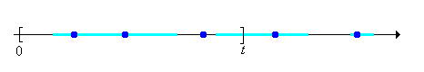
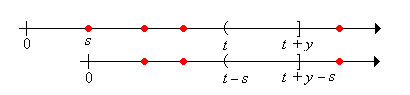
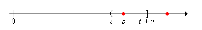
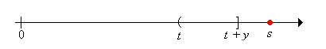
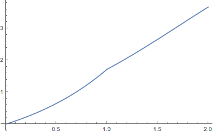
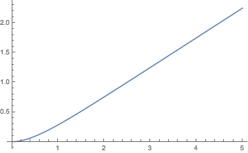

Many quantities of interest in the study of renewal processes can be described by a special type of integral equation known as a renewal equation. Renewal equations almost always arise by conditioning on the time of the first arrival and by using the defining property of a renewal process—the fact that the process restarts at each arrival time, independently of the past. However, before we can study renewal equations, we need to develop some additional concepts and tools involving measures, convolutions, and transforms. Some of the results in the sections on measure theory, general distribution functions, the integral with respect to a measure, properties of the integral, and density functions are needed for this section. You may need to review some of these topics as necessary. As usual, we assume that all functions and sets that are mentioned are measurable with respect to the appropriate \( \sigma \)-algebras. In particular, \( [0, \infty) \) which is our basic temporal space, is given the usual Borel \( \sigma \)-algebra generated by the intervals and Lebesgue measure which generalizes length of intervals.
Recall that a distribution function on \( [0, \infty) \) is a function \( G: [0, \infty) \to [0, \infty) \) that is increasing and continuous from the right. The distribution function \( G \) defines a positive measure on \( [0, \infty) \), which we will also denote by \( G \), by means of the formula \( G[0, t] = G(t) \) for \( t \in [0, \infty) \).

Hopefully, our notation will not cause confusion and it will be clear from context whether \( G \) refers to the positive measure (a set function) or the distribution function (a point function). More generally, if \( a, \, b \in [0, \infty) \) and \( a \le b \) then \( G(a, b] = G(b) - G(a) \). Note that the positive measure associated with a distribution function is locally finite in the sense that \( G(A) \lt \infty \) is \( A \subset [0, \infty) \) is bounded. Of course, if \( A \) is unbounded, \( G(A) \) may well be infinite. The basic structure of a distribution function and its associated positive measure occurred several times in our preliminary discussion of renewal processes:
Distributions associated with a renewal process.
Suppose again that \( G \) is a distribution function on \( [0, \infty) \). Recall that the integral associated with the positive measure \( G \) is also called the Lebesgue-Stieltjes integral associated with the distribution function \( G \) (named for Henri Lebesgue and Thomas Stieltjes). If \( f: [0, \infty) \to \R \) and \( A \subseteq [0, \infty) \) (measurable of course), the integral of \( f \) over \( A \) (if it exists) is denoted \[ \int_A f(t) \, dG(t) \] We use the more conventional \( \int_0^t f(x) \, dG(x)\) for the integral over \( [0, t] \) and \( \int_0^\infty f(x) \, dG(x) \) for the integral over \( [0, \infty) \). On the other hand, \( \int_s^t f(x) \, dG(x) \) means the integral over \( (s, t] \) for \( s \lt t \), and \(\int_s^\infty f(x) \, dG(x)\) means the integral over \( (s, \infty) \). Thus, the additivity of the integral over disjoint domains holds, as it must. For example, for \( t \in [0, \infty) \), \[ \int_0^\infty f(x) \, dG(x) = \int_0^t f(x) \, dG(x) + \int_t^\infty f(x) \, dG(x) \] This notation would be ambiguous without the clarification, but is consistent with how the measure works: \( G[0, t] = G(t) \) for \( t \ge 0 \), \( G(s, t] = G(t) - G(s) \) for \( 0 \le s \lt t \), etc. Of course, if \( G \) is continuous as a function, so that \( G \) is also continuous as a measure, then none of this matters—the integral over an interval is the same whether or not endpoints are included. . The following definition is a natural complement to the locally finite property of the positive measures that we are considering.
A function \( f: [0, \infty) \to \R \) is locally bounded if it is measurable and is bounded on \( [0, t] \) for each \( t \in [0, \infty) \).
The locally bounded functions form a natural class for which our integrals of interest exist.
Suppose that \( G \) is a distribution function on \( [0, \infty) \) and \( f: [0, \infty) \to \R \) is locally bounded. Then \( g: [0, \infty) \to \R \) defined by \( g(t) = \int_0^t f(s) \, dG(s) \) is also locally bounded.
Suppose that \( \left|f(s)\right| \le C_t \) for \( s \in [0, t] \) and \( t \in [0, \infty) \). Then \[ \int_0^s \left|f(x)\right| \, dG(x) \le C_t G(s) \le C_t G(t), \quad t \in [0, \infty) \] Hence \( f \) is integrable on \( [0, s] \) and the integral is bounded by \( C_t G(t) \) for \( s \in [0, t] \).
Note that if \( f \) and \( g \) are locally bounded, then so are \( f + g \) and \( f g \). If \( f \) is increasing on \( [0, \infty) \) then \( f \) is locally bounded, so in particular, a distribution function on \( [0, \infty) \) is locally bounded. If \( f \) is continuous on \( [0, \infty) \) then \( f \) is locally bounded. Similarly, if \( G \) and \( H \) are distribution functions on \( [0, \infty) \) and if \( c \in (0, \infty) \), then \( G + H \) and \( c G \) are also distribution functions on \( [0, \infty) \). Convolution, which we consider next, is another way to construct new distributions on \( [0, \infty) \) from ones that we already have.
The term convolution means different things in different settings. Let's start with the definition we know, the convolution of probability density functions, on our space of interest \( [0, \infty) \).
Suppose that \( X \) and \( Y \) are independent random variables with values in \( [0, \infty) \) and with probability density functions \( f \) and \( g \), respectively. Then \( X + Y \) has probability density function \( f * g \) given as follows, in the discrete case and in the continuous case, respectively \begin{align} (f * g)(t) & = \sum_{s \in [0, t]} f(t - s) g(s) \\ (f * g)(t) & = \int_0^t f(t - s) g(s) \, ds \end{align}
In the discrete case, it's understood that \( t \) is a possible value of \( X + Y \), and the sum is over the countable collection of \( s \in [0, t] \) with \( s \) a value of \( X \) and \( t - s \) a value of \( Y \). Often in this case, the random variables take values in \( \N \), in which case the sum is simply over the set \( \{0, 1, \ldots, t\} \) for \( t \in \N \). The discrete and continuous cases could be unified by defining convolution with respect to a general positive measure on \( [0, \infty) \). Moreover, the definition clearly makes sense for functions that are not necessarily probability density functions.
Suppose that \( f, \, g: [0, \infty) \to \R \) ae locally bounded and that \( H \) is a distribution function on \( [0, \infty) \). The convolution of \( f \) and \( g \) with respect to \( H \) is the function on \( [0, \infty) \) defined by \[ t \mapsto \int_0^t f(t - s) g(s) \, dH(s) \]
If \( f \) and \( g \) are probability density functions for discrete distributions on a countable set \( C \subseteq [0, \infty) \) and if \( H \) is counting measure on \( C \), we get discrete convolution, as above. If \( f \) and \( g \) are probability density functions for continuous distributions on \( [0, \infty) \) and if \( H \) is Lebesgue measure, we get continuous convolution, as above. Note however, that if \( g \) is nonnegative then \( G(t) = \int_0^t g(s) \, dH(s) \) for \( t \in [0, \infty) \) defines another distribution function on \( [0, \infty) \), and the convolution integral above is simply \( \int_0^t f(t - s) \, dG(s) \). This motivates our next version of convolution, the one that we will use in the remainder of this section.
Suppose that \( f: [0, \infty) \to \R \) is locally bounded and that \( G \) is a distribution function on \( [0, \infty) \). The convolution of the function \( f \) with the distribution \( G \) is the function \( f * G \) defined by \[ (f * G)(t) = \int_0^t f(t - s) \, dG(s), \quad t \in [0, \infty) \]
Note that if \( F \) and \( G \) are distribution functions on \( [0, \infty) \), the convolution \( F * G \) makes sense, with \( F \) simply as a function and \( G \) as a distribution function. The result is another distribution function. Moreover in this case, the operation is commutative.
If \( F \) and \( G \) are distribution functions on \( [0, \infty) \) then \( F * G \) is also a distribution function on \( [0, \infty) \), and \( F * G = G * F \)
Let \( F \otimes G \) and \( G \otimes F \) denote the usual product measures on \([0, \infty)^2 = [0, \infty) \times [0, \infty)\). For \( t \in [0, \infty) \), let \( T_t = \left\{(r, s) \in [0, \infty)^2: r + s \le t\right\} \), the triangular region with vertices \( (0, 0) \), \( (t, 0) \), and \( (0, t) \) . Then \[ (F * G)(t) = \int_0^t F(t - s) \, dG(s) = \int_0^t \int_0^{t - s} dF(r) \, dG(s) = (F \otimes G)\left(T_t\right) \] This clearly defines a distribution function. Specifically, if \( 0 \le s \le t \lt \infty \) then \( T_s \subseteq T_t \) so \((F * G)(s) = (F \otimes G)(T_s) \le (F \otimes G)(T_t) = (F * G)(t)\). Hence \( F * G \) is decreasing. If \( t \in [0, \infty) \) and \( t_n \in [0, \infty) \) for \( n \in \N_+ \) with \( t_n \downarrow t \) as \( n \to \infty \) then \( T_{t_n} \downarrow T_t \) (in the subset sense) as \( n \to \infty \) so by the continuity property of \( F \otimes G \) we have \( (F * G)(t_n) = (F \otimes G)\left(T_{t_n}\right) \downarrow (F \otimes G)(T_t) = (F * G)(t) \) as \( n \to \infty \). Hence \( F * G \) is continuous from the right.
For the commutative property, we have \((F * G)(t) = (F \otimes G)(T_t)\) and \( (G * F)(t) = (G \otimes F)(T_t) \). By the symmetry of the triangle \( T_t \) with respect to the diagonal \( \{(s, s): s \in [0, \infty)\} \), these are the same.
If \( F \) and \( G \) are probability distribution functions corresponding to independent random variables \( X \) and \( Y \) with values in \( [0, \infty) \), then \( F * G \) is the probabiltiy distribution function of \( X + Y \). Suppose now that \( f: [0, \infty) \to \R \) is locally bounded and that \( G \) and \( H \) are distribution functions on \( [0, \infty) \). From the previous result, both \( (f * G) * H \) and \( f * (G * H) \) make sense. Fortunately, they are the same so that convolution is associative.
Suppose that \( f: [0, \infty) \to \R \) is locally bounded and that \( G \) and \( H \) are distribution functions on \( [0, \infty) \). Then \[ (f * G) * H = f * (G * H) \]
For \( t \in [0, \infty) \), \[ [(f * G) * H](t) = \int_0^t (f * G)(t - s) \, dH(s) = \int_0^t \int_0^{t - s} f(t - s - r) \, dG(r) \, dH(s) = [f * (G * H)](t) \]
Finally, convolution is a linear operation. That is, convolution preserves sums and scalar multiples, whenever these make sense.
Suppose that \( f, \, g: [0, \infty) \to \R \) are locally bounded, \( H \) is a distribution function on \( [0, \infty) \), and \( c \in \R \). Then
These properties follow easily from linearity properties of the integral.
Suppose that \( f: [0, \infty) \to \R \) is locally bounded, \( G \) and \( H \) are distribution functions on \( [0, \infty) \), and that \( c \in (0, \infty) \). Then
These properties also follow from linearity properties of the integral.
Like convolution, the term Laplace transform (named for Pierre Simon Laplace of course) can mean slightly different things in different settings. We start with the usual definition that you may have seen in your study of differential equations or other subjects:
The Laplace transform of a function \( f: [0, \infty) \to \R \) is the function \( \phi \) defined as follows, for all \( s \in (0, \infty) \) for which the integral exists in \( \R \): \[ \phi(s) = \int_0^\infty e^{-s t} f(t) \, dt \]
Suppose that \( f \) is nonnegative, so that the integral defining the transform exists in \( [0, \infty] \) for every \( s \in (0, \infty) \). If \( \phi(s_0) \lt \infty \) for some \( s_0 \in (0, \infty) \) then \( \phi(s) \lt \infty\) for \( s \ge s_0 \). The transform of a general function \( f \) exists (in \( \R \)) if and only if the transform of \( \left|f\right| \) is finite at \( s \). It follows that if \( f \) has a Laplace transform, then the transform \( \phi \) is defined on an interval of the form \( (a, \infty) \) for some \( a \in (0, \infty) \). The actual domain is of very little importance; the main point is that the Laplace transform, if it exists, will be defined for all sufficiently large \( s \). Basically, a nonnegative function will fail to have a Laplace transform if it grows at a hyper-exponential rate
as \( t \to \infty \).
We could generalize the Laplace transform by replacing the Riemann or Lebesgue integral with the integral over a positive measure on \( [0, \infty) \).
Suppose that that \( G \) is a distribution on \( [0, \infty) \). The Laplace transform of \( f: [0, \infty) \to \R \) with respect to \( G \) is the function given below, defined for all \( s \in (0, \infty) \) for which the integral exists in \( \R \): \[ s \mapsto \int_0^\infty e^{-s t} f(t) \, dG(t) \]
However, as before, if \( f \) is nonnegative, then \( H(t) = \int_0^t f(x) \, dG(x) \) for \( t \in [0, \infty) \) defines another distribution function, and the previous integral is simply \( \int_0^\infty e^{-s t} \, dH(t) \). This motivates the definiton for the Laplace transform of a distribution.
The Laplace transform of a distribution \( F \) on \( [0, \infty) \) is the function \( \Phi \) defined as follows, for all \( s \in (0, \infty) \) for which the integral is finite: \[\Phi(s) = \int_0^\infty e^{-s t} dF(t)\]
Once again if \( F \) has a Laplace transform, then the transform will be defined for all sufficiently large \( s \in (0, \infty) \). We will try to be explicit in explaining which of the Laplace transform definitions is being used. For a generic function, the first definition applies, and we will use a lower case Greek letter. If the function is a distribution function, either definition makes sense, but it is usually the the latter that is appropriate, in which case we use an upper case Greek letter. Fortunately, there is a simple relationship between the two.
Suppose that \( F \) is a distribution function on \( [0, \infty) \). Let \( \Phi \) denote the Laplace transform of the distribution \( F \) and \( \phi \) the Laplace transform of the function \( F \). Then \( \Phi(s) = s \phi(s) \).
The main tool is Fubini's theorem (named for Guido Fubini), which allow us to interchange the order of integration for a nonnegative function. \begin{align} \phi(s) & = \int_0^\infty e^{-s t} F(t) \, dt = \int_0^\infty e^{-s t} \left(\int_0^t dF(x)\right) dt \\ & = \int_0^\infty \left(\int_x^\infty e^{-s t} dt\right) dF(x) = \int_0^\infty \frac{1}{s} e^{-s x} dF(x) = \frac{1}{s} \Phi(s) \end{align}
For a probability distribution, there is also a simple relationship between the Laplace transform and the moment generating function.
Suppose that \( X \) is a random variable with values in \( [0, \infty) \) and with probability distribution function \( F \). The Laplace transform \( \Phi \) and the moment generating function \( \Gamma \) of the distribution \( F \) are given as follows, and so \( \Phi(s) = \Gamma(-s) \)for all \( s \in (0, \infty) \). \begin{align} \Phi(s) & = \E\left(e^{-s X}\right) = \int_0^\infty e^{-s t} dF(t) \\ \Gamma(s) & = \E\left(e^{s X}\right) = \int_0^\infty e^{s t} dF(t) \end{align}
In particular, a probability distribution \( F \) on \( [0, \infty) \) always has a Laplace transform \( \Phi \), defined on \( (0, \infty) \). Note also that if \( F(0) \lt 1 \) (so that \( X \) is not deterministically 0), then \( \Phi(s) \lt 1 \) for \( s \in (0, \infty) \).
Laplace transforms are important for general distributions on \( [0, \infty) \) for the same reasons that moment generating functions are important for probability distributions: the transform of a distribution uniquely determines the distribution, and the transform of a convolution is the product of the corresponding transforms (and products are much nicer mathematically than convolutions). The following theorems give the essential properties of Laplace transforms. We assume that the transforms exist, of course, and it should be understood that equations involving transforms hold for sufficiently large \( s \in (0, \infty) \).
Suppose that \( F \) and \( G \) are distributions on \( [0, \infty) \) with Laplace transforms \( \Phi \) and \( \Gamma \), respectively. If \( \Phi(s) = \Gamma(s) \) for \( s \) sufficiently large, then \( G = H \)
In the case of general functions on \( [0, \infty) \), the conclusion is that \( f = g \) except perhaps on a subset of \( [0, \infty) \) of measure 0. The Laplace transform is a linear operation.
Suppose that \( f, \, g : [0, \infty) \to \R \) have Laplace transforms \( \phi \) and \( \gamma \), respectively, and \( c \in \R\) then
These properties follow from the linearity of the integral. For \( s \) sufficiently large,
The same properties holds for distributions on \( [0, \infty) \) with \( c \in (0, \infty) \). Integral transforms have a smoothing effect. Laplace transforms are differentiable, and we can interchange the derivative and integral operators.
Suppose that \( f: [0, \infty) \to \R \) has Lapalce transform \( \phi \). Then \( \phi \) has derivatives of all orders and \[ \phi^{(n)}(s) = \int_0^\infty (-1)^n t^n e^{- s t} f(t) \, dt \]
Restated, \( (-1)^n \phi^{(n)} \) is the Laplace transform of the function \( t \mapsto t^n f(t) \). Again, one of the most important properties is that the Laplace transform turns convolution into products.
Suppose that \( f: [0, \infty) \to \R \) is locally bounded with Laplace transform \( \phi \), and that \( G \) is a distribution function on \( [0, \infty) \) with Laplace transform \( \Gamma \). Then \(f * G\) has Laplace transform \( \phi \cdot \Gamma \).
By definition, the Laplace transform of \( f * G \) is \[ \int_0^\infty e^{-s t} (f * G)(t) \, dt = \int_0^\infty e^{-s t} \left(\int_0^t f(t - x) \, dG(x)\right) dt \] Writing \( e^{-s t} = e^{-s(t - x)} e^{-s x} \) and reversing the order of integration, the last iterated integral can be written as \[ \int_0^\infty e^{-s x} \left(\int_x^\infty e^{-s (t - x)} f(t - x) \, dt\right) dG(x) \] The interchange is justified, once again, by Fubini's theorem, since our functions are integrable (for sufficiently large \( s \in (0, \infty) \)). Finally with the substitution \( y = t - x \) the last iterated integral can be written as a product \[ \left(\int_0^\infty e^{-s y} f(y) \, dy\right) \left(\int_0^\infty e^-{s x} dG(x)\right) = \phi(s) \Gamma(s) \]
If \( F \) and \( G \) are distributions on \( [0, \infty) \), then so is \( F * G \). The result above applies, of course, with \( F \) and \( F * G \) thought of as functions and \( G \) as a distribution, but multiplying through by \( s \) and using , it's clear that the result is also true with all three as distributions.
Armed with our new analytic machinery, we can return to the study of renewal processes. Thus, suppose that we have a renewal process with interarrival sequence \( \bs{X} = (X_1, X_2, \ldots) \), arrival time sequence \( \bs{T} = (T_0, T_1, \ldots) \), and counting process \( \bs{N} = \{N_t: t \in [0, \infty)\} \). As usual, let \( F \) denote the common distribution function of the interarrival times, and let \( M \) denote the renewal function, so that \( M(t) = \E(N_t) \) for \( t \in [0, \infty) \). Of course, the probability distribution function \( F \) defines a probability measure on \( [0, \infty) \), but as noted earlier, \( M \) is also a distribution functions and so defines a positive measure on \( [0, \infty) \). Recall that \( F^c = 1 - F \) is the right distribution function (or reliability function) of an interarrival time.
The distributions of the arrival times are the convolution powers of \( F \). That is, \( F_n = F^{*n} = F * F * \cdots * F \).
This follows from the definitions: \( F_n \) is the distribution function of \( T_n \), and \( T_n = \sum_{i=1}^n X_i \). Since \( \bs{X} \) is an independent, identically distributed sequence, \( F_n = F^{*n} \)
The next definition is the central one for this section.
Suppose that \( a: [0, \infty) \to \R \) is locally bounded. An integral equation of the form \[ u = a + u * F \] for an unknown function \( u: [0, \infty) \to \R \) is called a renewal equation for \( u \).
Often \( u(t) = \E(U_t) \) where \( \left\{U_t: t \in [0, \infty)\right\} \) is a random process of interest associated with the renewal process. The renewal equation comes from conditioning on the first arrival time \( T_1 = X_1 \), and then using the defining property of the renewal process—the fact that the process starts over, interdependently of the past, at the arrival time. Our next important result illustrates this.
Renewal equations for \( M \) and \( F \):
Thus, the renewal function itself satisfies a renewal equation. Of course, we already have a formula
for \( M \), namely \( M = \sum_{n=1}^\infty F_n \). However, sometimes \( M \) can be computed more easily from the renewal equation directly. The next result is the transform version of the previous result:
The distributions \( F \) and \( M \) have Laplace transfroms \( \Phi \) and \( \Gamma \), respectively, that are related as follows: \[ \Gamma = \frac{\Phi}{1 - \Phi}, \quad \Phi = \frac{\Gamma}{\Gamma + 1} \]
Our first proof uses the renewal equation. Taking Laplace transforms through the renewal equation \( M = F + M * F \) (and treating all terms as distributions), we have \( \Gamma = \Phi + \Gamma \Phi \). Solving for \( \Gamma \) gives the result. Recall that since \( F \) is a probability distribution on \( [0, \infty) \) with \( F(0) \lt 1 \), we know that \( 0 \lt \Phi(s) \lt 1 \) for \( s \in (0, \infty) \). The second equation follows from the first by simple algebra.
Our second proof uses convolution. Recall that \( M = \sum_{n=1}^\infty F^{* n} \). Taking Laplace trasforms (again treating all terms as distributions), and using geometric series we have \[ \Gamma = \sum_{n=1}^\infty \Phi^n = \frac{\Phi}{1 - \Phi} \] Recall again that \( 0 \lt \Phi(s) \lt 1 \) for \( s \in (0, \infty) \). Once again, the second equation follows from the first by simple algebra.
In particular, the renewal distribution \( M \) always has a Laplace transform. The following exercise gives the fundamental results on the solution of the renewal equation.
Suppose that \( a: [0, \infty) \to \R \) is locally bounded. Then the unique locally bounded solution to the renewal equation \( u = a + u * F \) is \( u = a + a * M \).
For a direct proof, suppose that \( u = a + a * M \). Then \( u * F = a * F + a * M * F\). But from , \( M * F = M - F \). Hence we have \(u * F = a * F + a * (M - F) = a * [F + (M - F)] = a * M \). But \( a * M = u - a \) by definition of \( u \), so \( u = a + u * F \) and hence \( u \) is a solution to the renewal equation. Next since \( a \) is locally bounded, so is \( u = a + a * M \). Suppose now that \( v \) is another locally bounded solution of the integral equation, and let \( w = u - v \). Then \( w \) is locally bounded and \( w * F = (u * F) - (v * F) = [(u - a) - (v - a) = u - v = w \). Hence \( w = w * F_n \) for \( n \in \N_+ \). Suppose that \( \left|w(s)\right| \le D_t \) for \( 0 \le s \le t \). Then \( \left|w(t)\right| \le D_t \, F_n(t) \) for \( n \in \N_+ \). Since \( M(t) = \sum_{n=1}^\infty F_n(t) \lt \infty \) it follows that \( F_n(t) \to 0 \) as \( n \to \infty \). Hence \( w(t) = 0 \) for \( t \in [0, \infty) \) and so \( u = v \).
Another proof uses Laplace transforms. Let \( \alpha \) and \( \theta \) denote the Laplace transforms of the functions \( a \) and \( u \), respectively, and \( \Phi \) the Laplace transform of the distribution \( F \). Taking Laplace transforms through the renewal equations gives the simple algebraic equation \( \theta = \alpha + \theta \Phi \). Solving give \[ \theta = \frac{\alpha}{1 - \Phi} = \alpha \left(1 + \frac{\Phi}{1 - \Phi}\right) = \alpha + \alpha \Gamma \] where \( \Gamma = \frac{\Phi}{1 - \Phi} \) is the Laplace transform of the distribution \( M \). Thus \( \theta \) is the transform of \( a + a * M \).
Returning to the renewal equations for \( M \) and \( F \) in , we now see that the renewal function \( M \) completely determines the renewal process: from \( M \) we can obtain \( F \), and everything is ultimately constructed from the interarrival times. Of course, this is also clear from the Laplace transform in which gives simple algebraic equations for each transform in terms of the other.
Let's recall the definition of the age variables. A deterministic time \( t \in [0, \infty) \) falls in the random renewal interval \(\left[T_{N_t}, T_{N_t + 1}\right)\). The current life (or age) at time \( t \) is \( C_t = t - T_{N_t} \), the remaining life at time \( t \) is \( R_t = T_{N_t + 1} - t \), and the total life at time \( t \) is \( L_t = T_{N_t + 1} - T_{N_t} \). In the usual reliability setting, \( C_t \) is the age of the device that is in service at time \( t \), while \( R_t \) is the time until that device fails, and \( L_t \) is the total lifetime of the device.
For \( t, \, y \in [0, \infty) \), let \[ r_y(t) = \P(R_t \gt y) = \P\left(N(t, t + y] = 0\right) \] and let \( F^c_y(t) = F^c(t + y) \). Note that \( y \mapsto r_y(t)\) is the right distribution function of \( R_t \). We will derive and then solve a renewal equation for \( r_y \) by conditioning on the time of the first arrival. We can then find integral equations that describe the distribution of the current age and the joint distribution of the current and remaining ages.
For \( y \in [0, \infty) \), \( r_y \) satisfies the renewal equation \( r_y = F^c_y + r_y * F \) and hence for \( t \in [0, \infty) \), \[ \P(R_t \gt y) = F^c(t + y) + \int_0^t F^c(t + y - s) \, dM(s), \quad y \ge 0 \]
As usual, we condition on the time of the first renewal: \[ \P(R_t \gt y) = \int_0^\infty \P(R_t \gt y \mid X_1 = s) \, dF(s) \] We are naturally led to break the domain \( [0, \infty) \) of the integral into three parts \( [0, t] \), \( (t, t + y] \), and \( (t + y, \infty) \), which we take one at a time.
Note first that \( \P(R_t \gt y \mid X_1 = s) = \P(R_{t-s} \gt y) \) for \( s \in [0, t] \)

Next note that \( \P(R_t \gt y \mid X_1 = s) = 0 \) for \( s \in (t, t + y] \)

Finally note that \( \P(R_t \gt y \mid X_1 = s) = 1 \) for \( s \in (t + y, \infty) \)

Putting the pieces together we have \[ \P(R_t \gt y) = \int_0^t \P(R_{t - s} \gt y) \, dF(s) + \int_t^{t+y} 0 \, dF(s) + \int_{t + y}^\infty 1 \, dF(s) \] In terms of our function notation, the first integral is \( (r_y * F)(t) \), the second integral is 0 of course, and the third integral is \( 1 - F(t + y) = F_y^c(t) \). Thus the renewal equation is satisfied and the formula for \( \P(R_t \gt y) \) follows .
We can now describe the distribution of the current age.
For \( t \in [0, \infty) \), \[ \P(C_t \ge x) = F^c(t) + \int_0^{t-x} F^c(t - s) \, dM(s), \quad x \in [0, t] \]
Finally we get the joint distribution of the current and remaining ages.
For \( t \in [0, \infty) \), \[ \P(C_t \ge x, R_t \gt y) = F^c(t + y) + \int_0^{t-x} F^c(t + y - s) \, dM(s), \quad x \in [0, t], \; y \in [0, \infty) \]
Consider the renewal process with interarrival times uniformly distributed on \( [0, 1] \). Thus the distribution function of an interarrival time is \( F(x) = x \) for \( 0 \le x \le 1 \). The renewal function \( M \) can be computed from the general renewal equation for \( M \) in by successively solving differential equations. The following exercise give the first two cases.
On the interval \( [0, 2] \), the renewal function \( M \) is given as follows:

The Laplace transform \(\Phi\) of the interarrival distribution \( F \) and the Laplace transform \( \Gamma \) of the renewal distribution \( M \) are given by \[ \Phi(s) = \frac{1 - e^{-s}}{s}, \; \Gamma(s) = \frac{1 - e^{-s}}{s - 1 + e^{-s}}; \quad s \in (0, \infty) \]
First note that \[\Phi(s) = \int_0^\infty e^{-s t} dF(t) = \int_0^1 e^{-s t} dt = \frac{1 - e^{-s}}{s}, \quad s \in (0, \infty)\] The formula for \( \Gamma \) follows from \( \Gamma = \Phi \big/ (1 - \Phi) \).
Open the renewal experiment and select the uniform interarrival distribution on the interval \( [0, 1] \). For each of the following values of the time parameter, run the experiment 1000 times and note the shape and location of the empirical distribution of the counting variable.
Recall that the Poisson process has interarrival times that are exponentially distributed with rate parameter \( r \gt 0 \). Thus, the interarrival distribution function \( F \) is given by \( F(x) = 1 - e^{-r x} \) for \( x \in [0, \infty) \). The following exercises give alternate proofs of fundamental results obtained in the introduction.
Show that the renewal function \( M \) is given by \( M(t) = r t \) for \( t \in [0, \infty) \)
The current and remaining life at time \( t \ge 0 \) satisfy the following properties:
Recall again that \( M(t) = r t \) for \( t \in [0, \infty) \). Using , and some standard calculus, we have \[ \P(C_t \ge x, R_t \ge y) = e^{-r (t + y)} + \int_0^{t - x} e^{-r(t + y - s)} r ds = r^{-r x} e^{-r y}, \quad x \in [0, t], \, y \in [0, \infty) \] Letting \( y = 0 \) gives \( \P(C_t \ge x) = e^{-r x} \) for \( x \in [0, t] \). Letting \( x = 0 \) gives \( \P(R_t \ge y) = e^{-r y} \) for \( y \in [0, \infty) \). But then also \( \P(C_t \ge x, R_t \ge y) = \P(C_t \ge x) \P(R_t \ge y) \) for \( x \in [0, t] \) and \( y \in [0, \infty) \) so the variables are independent.
Consider the renewal process for which the interarrival times have the geometric distribution with parameter \( p \). Recall that the probability density function is \[ f(n) = (1 - p)^{n-1}p, \quad n \in \N_+ \] The arrivals are the successes in a sequence of Bernoulli trials. The number of successes \( Y_n \) in the first \( n \) trials is the counting variable for \( n \in \N \). The renewal equations in this section can be used to give alternate proofs of some of the fundamental results in the introduction.
Show that the renewal function \(M\) is given by \( M(n) = n p \) for \( n \in \N \)
The current and remaining life at time \( n \in \N \) satisfy the following properties:.
Recall again that \( M(n) = p n \) for \( n \in \N \). Using and geometric series, we have \[ \P(C_n \ge j, R_n \gt k) = (1 - p)^{n + k} + \sum_{i=1}^{n-j} p (1 - p)^{n + k - i} = (1 - p)^{j + k}, \quad j \in \{0, 1, \ldots, n\}, \, k \in \N \] Letting \( k = 0 \) gives \( \P(C_n \ge j) = (1 - p)^j \) for \( j \in \{0, 1, \ldots, n\} \). Letting \( j = 0 \) gives \( \P(R_n \gt k) = (1 - p)^k \) for \( k \in \N \). But then also \( \P(C_n \ge j, R_n \gt k) = \P(C_n \ge j) \P(R_n \gt k) \) for \( j \in \{0, 1, \ldots, n\} \) and \( k \in \N \) so the variables are independent.
Consider the renewal process whose interarrival distribution \( F \) is the gamma distribution with shape parameter \( 2 \) and rate parameter \( r \in (0, \infty) \). Thus \[ F(t) = 1 - (1 + r t) e^{-r t}, \quad t \in [0, \infty) \] Recall also that \( F \) is the distribution of the sum of two independent random variables, each having the exponential distribution with rate parameter \( r \).
The renewal function \( M \) is given by \[ M(t) = -\frac{1}{4} + \frac{1}{2} r t + \frac{1}{4} e^{- 2 r t}, \quad t \in [0, \infty) \]
The exponential distribution with rate parameter \( r \) has Laplace transform \( s \mapsto r \big/ (r + s) \) and hence the Laplace transform \( \Phi \) of the interarrival distribution \( F \) is given by \[ \Phi(s) = \left(\frac{r}{r + s}\right)^2 \] So the Laplace transform \( \Gamma \) of the distribution \( M \) is \[ \Gamma(s) = \frac{\Phi(s)}{1 - \Phi(s)} = \frac{r^2}{s (s + 2 r)} \] Using a partial fraction decomposition, \[ \Gamma(s) = \frac{r}{2 s} - \frac{r}{2 (s + 2 r)} = \frac{1}{2} \frac{r}{s} - \frac{1}{4} \frac{2 r }{s + 2 r} \] But the \( r / s \) is the Laplace transform of the distribution \( r t \) and \( 2 r \big/(s + 2 r ) \) is the Laplace transform of the distribution \( 1 - e^{-2 r t} \) (the exponential distribution with parameter \( 2 r \)).
Note that \( M(t) \approx -\frac{1}{4} + \frac{1}{2} r t \) as \( t \to \infty \).

Open the renewal experiment and select the gamma interarrival distribution with shape parameter \( k = 2 \) and scale parameter \( b = 1 \) (so the rate parameter \( r = \frac{1}{b} \) is also 1). For each of the following values of the time parameter, run the experiment 1000 times and note the shape and location of the empirical distribution of the counting variable.